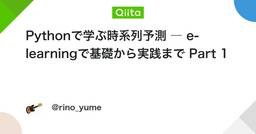
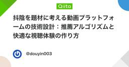

機械学習タグが付けられた新着記事 - Qiita
https://qiita.com/tags/機械学習
機械学習に関する情報が集まっています。現在16284件の記事があります。また9437人のユーザーが機械学習タグをフォローしています。
フィード

GoogleのEmbeddingGemma 2をOpenCLIP風に使えるPythonライブラリを作ってPyPIに公開してみた
機械学習タグが付けられた新着記事 - Qiita
はじめにGoogleのEmbeddingGemma 2を、OpenCLIPに近いインターフェースで扱えるPythonライブラリ「openclip-gemma」を開発し、PyPIに公開しました。GitHub: https://github.com/kotadymo/op...
15時間前

マルチターン攻撃（Crescendo）はなぜ単発の評価で見落とされるのか：会話全体の検査と評価条件を模擬実装で確かめる
機械学習タグが付けられた新着記事 - Qiita
LLM のジェイルブレイク評価は、1 回の入力に対してモデルが断るかどうかを見る形が中心です。ところが実際の利用では、ユーザーは何往復も会話を続けられます。無害な質問から始めて少しずつ話を進め、最後にモデル自身の過去の応答を足がかりに目的の出力を引き出すマルチターン攻撃は、...
16時間前

【技術解説】金融データ分析でLSTMによる時系列予測を使いこなす！Python実装ガイド
機械学習タグが付けられた新着記事 - Qiita
金融データ分析におけるLSTMによる時系列予測近年、金融分野においてデータ分析の重要性が増しています。特に、深層学習を用いた時系列予測は多くの注目を集めています。本記事では、Pythonを用いてLSTM（Long Short-Term Memory）モデルを活用し、金融...
1日前

機械学習の独学で効いた技術書4選
機械学習タグが付けられた新着記事 - Qiita
はじめに数年前、社内のレコメンド改善を任されたときに自分は完全に手が止まった。ライブラリを呼べばモデルは学習できる。評価スコアも出る。なのに「なぜこの精度なのか」「この差は意味があるのか」を聞かれると何も答えられなかった。困ってWeb記事を漁った。断片は埋まる。ただ記...
1日前

自動レッドチーミングの主要手法 GCG・PAIR・TAP：仕組みの違いと評価での使い分けを模擬実装で確かめる
機械学習タグが付けられた新着記事 - Qiita
LLM アプリのレッドチームを人手だけで回すと、試せるプロンプトの数がすぐに頭打ちになります。そこで、攻撃プロンプトの生成そのものを自動化する手法が研究されてきました。よく名前が挙がるのが GCG、PAIR、TAP の 3 つで、OSS のレッドチームツールにも実装されています。この記事では、3 つの手法が「何を手がかりに、何を探しているのか」を整理し、自社のモデルやアプリを評価するときにどれを使うかの基準をまとめます。仕組みは、実際の LLM を使わない小さな模擬実装で確かめます。攻撃に使える具体的なプロンプトは載せません。3 つの手法は「どこまでモデルが見えるか」で分かれる手法必要なアクセス探すもの手がかり出てくるプロンプトGCG重みと勾配（ホワイトボックス）依頼文の後ろに付けるトークン列（サフィックス）損失の勾配記号や単語の断片が並ぶ、人が読めない文字列PAIR応答だけ（ブラックボックス）依頼文そのものの言い換え評価役 LLM の点数自然な文章TAP応答だけ（ブラックボックス）依頼文そのものの言い換え評価役 LLM の点数と枝刈り自然な文章GCG は 2023 年に Zou らが
2日前

【AIが一夜で350の主要数学問題を解決】フィールズ賞受賞者が語る、純粋数学の「オッペンハイマー・モーメント」と今後の展望
機械学習タグが付けられた新着記事 - Qiita
はじめにわずか3〜4年前まで、理論数学者たちにとって大規模言語モデル（LLM）は「初歩的な論理パズルを解かせて hallucination（幻覚）を起こす様子を見て笑う」という学術的な冗談の種に過ぎませんでした。しかし今、純粋数学は物理学研究所ではなく、AIコングロマリットの静かなサーバー上で、自らの「オッペンハイマー・モーメント（核兵器開発のような、技術が世界を不可逆的に変える瞬間）」を迎えています。フランス数学会（SMF）会長イザベル・ギャラガー主催のウェビナーにおいて、フィールズ賞受賞者のユゴ・デュミニル＝コパン（Hugo Duminil-Copin） 氏は、この急激なフェーズ遷移について重く、しかし明確な報告を行いました。本記事では、そのウェビナー（参考YouTubeリンク）の内容を基に、AIによる自動化が高等数学にもたらした存在論的危機と、数学者たちが今後どう向き合うべきかについて5つの重要なポイントに整理して紹介します。1. チャットボットの笑い話から、10年の研究を1秒で無にする時代へ転換点は今年4月、Leanによる形式的証明の自動化と最新のChatGPTリリースと共に訪
2日前

【PostgreSQL/pgvector】500万社から「類似企業・競合他社」をミリ秒で推薦するベクトル検索アーキテクチャの実装
機械学習タグが付けられた新着記事 - Qiita
1. はじめに：なぜキーワード検索だけでは「競合・類似企業」が見つからないのかB2Bセールスやアライアンス探索、M&Aリサーチにおいて、「ある成功企業（例：SmartHR）に類似したビジネスモデルを持つ企業」や「自社プロダクトの直接の競合他社」を発掘したいというニーズは極めて強いものがあります。しかし、旧来のリレーショナルDBにおけるキーワード部分一致（LIKE 検索）や単純な業界カテゴリ検索では、以下のような致命的な課題が発生します：同義語・表現の不一致: ある企業は「採用管理SaaS」、別の企業は「ATS・求人プラットフォーム」「採用DX支援」と表現しており、キーワード検索では漏れが発生する多面的な事業内容の捉え漏れ: 大手からスタートアップまで、Webサイト上には複数のサービスが記載されており、登記簿上の1つの産業コードでは実態を表現しきれない「近さ（類似度）」の定量化が不可能: キーワード検索は「含むか・含まないか」の0/1判定であり、どの企業がより似ているかをスコアリングしてランキングすることができないこの課題を解決するのが、**企業の事業概要テキストを密ベクトル（Dense
2日前

ローカル音声認識を自分の音声で測る：Moonshine のストリーミング認識と、応答速度・CER の測り方（Python）
機械学習タグが付けられた新着記事 - Qiita
日本語の音声認識を、自分の音声で測る方法をまとめます。題材は、ローカルで動く音声認識の Moonshine Voice（日本語の現行モデル Small Streaming）と、比較用の faster-whisper です。測った結果と考察は、本家のブログにまとめました。Moonshine と Whisper を日本語で比較：自前のテスト文で CER と応答速度を測ったこの記事は、その測定に使ったコードと、つまずいた点の実装編です。コードは、そのままコピーして動かせるように、最小の形にしています。準備python3 -m venv venv./venv/bin/pip install moonshine-voice faster-whisper numpy測る音声は、16 kHz・モノラル・16 bit の WAV にします。手元の音声は、ffmpeg で変換できます。ffmpeg -y -i input.m4a -ar 16000 -ac 1 -c:a pcm_s16le sample.wav動作確認に使ったバージョンは、moonshine-voice 0.1.5 と faster-w
3日前

【AI超入門④-④】勾配降下法とは？AIが「間違い」を減らして学習する仕組み
機械学習タグが付けられた新着記事 - Qiita
最初に前回は、損失関数について解説しました損失関数は、AIの予測と正解のズレを数値で評価するものでしたしかし、間違いの大きさが分かっただけでは、予測は良くなりませんここで、次の疑問が出てきます「間違いを小さくするために、何を、どう変えればいいのか？」今回は、そのための方法である 勾配降下法（Gradient Descent） について解説します最後に、小さなニューラルネットワークを実際に動かしてみます勾配降下法とは勾配降下法とは、損失が小さくなる方向を勾配から調べ、重みやバイアスを少しずつ更新する方法ですニューラルネットワークの計算には、入力に掛け合わせる「重み」と、その計算結果に足す「バイアス」がありますこれらの数値によって、同じ入力に対する予測も変わりますつまり、ここでいう学習とは、 「予測が正解に近づくように、モデル内部の数値を調整すること」損失関数で間違いを測り、勾配降下法でその間違いを減らすように調整します坂道を下るイメージで考える例えば、視界の悪い坂道で、低い場所へ下りたい場面を想像した場合、遠くまで見えなくても足元の傾きが分かれば、下りになっている方向へ少しずつ進めます今
3日前

LangGraphとQlib Alpha158、Google TimesFMで作る「自律型AIヘッジファンド」をOSS公開した話
機械学習タグが付けられた新着記事 - Qiita
はじめに：なぜ既存の「AI投資bot」は実戦で勝てないのか？ここ数ヶ月、GitHub上では virattt/ai-hedge-fund（6.3万スター）や TradingAgents（4.4万スター）といった、LLMマルチエージェントを活用したAIヘッジファンドのオープンソースが世界的な熱狂を巻き起こしています。しかし、これらのプロジェクトのコードを詳細に読み解き、実際に動かしてみると、ある**決定的な壁（Execution Realismの断絶）**に直面します：「推論」と「計算」が混同されているLLMにチャートの数値やファンダメンタルズ指標をそのまま読ませて直接「買い/売り」を判断させているため、ハルシネーション（もっともらしい嘘）や計算ミスが頻発する。手数料・スリッページ・流動性の無視バックテストでは勝てているように見えても、実際の市場摩擦（往復手数料、板スプレッドの不利約定）を引いた瞬間に利益が吹き飛ぶ。急落時の防衛機構（セーフティネット）の欠如LLMが長文で思考・議論している数分間の間に相場が急変した場合、損切りが間に合わず即死する。こうした既存の課題を工学的に克服し、「非構
3日前

機械学習を実務で回す技術書4選
機械学習タグが付けられた新着記事 - Qiita
はじめに半年ほど前、自分が担当していた予測モデルの改善案が社内レビューで止まった。オフライン評価のAUCは0.03上がっていた。それでも「その差は偶然ではないと言い切れるのか」と聞かれて、自分は何も答えられなかった。そのとき痛感したのは、ライブラリのAPIをいくら覚えても越えられない壁があるということ。fit と predict は書ける。ハイパーパラメータ探索も回せる。でも、なぜそのモデルが効いたのか、どれくらいのサンプルがあれば判断していいのか、本番で精度が落ちたときどこを疑うのか。この辺りは全部あやふやだった。自分はそこから、チュートリアル動画を追いかけるのをやめた。代わりに腰を据えて読む本を数冊だけ決めて、手元のコードと行き来しながら読むようにした。結果として、レビューで詰まる回数が明らかに減った。この記事では、そのとき選んだ4冊を紹介する。並べ方は「統計の感覚をつくる → モデルの中身を説明できるようにする → 数式を自力で追う → 本番で動かし続ける」という順にした。流行の新刊はほとんど入っていない。どれも長く残っている本で、読み終わったあとに手元に効果が残るものを優先して
3日前

SageMaker Clarify・Model Monitor・Bedrock Agents などが新規受付終了：14 の機能・サービスの状況と AWS が案内する代替、AWS 認定試験への影響
機械学習タグが付けられた新着記事 - Qiita
Daniel（シニアフルスタックエンジニア）です。AWS は 2026 年 6 月 30 日の「AWS サービスの提供状況に関する最新情報」で、Amazon SageMaker AI の 9 つの機能、Amazon Bedrock Agents（Amazon Bedrock Agents Classic に名称変更）、Amazon Kendra、Amazon Q Business などをメンテナンスに移行すると発表し、これらは 2026 年 7 月 30 日から新規のお客様が利用できなくなりました。同じ発表で SageMaker Profiler がサンセットに入り、SageMaker Ground Truth Plus はサポートを終了しています。本記事では、対象の機能ごとに「何をする機能か」「既存のお客様と新規のお客様で何が違うか」「AWS が代わりに何を案内しているか」を AWS の公式ドキュメントから整理し、最後に AWS 認定（MLA-C01 / MLA-C02、AIF-C01、AIP-C01）の受験者が気を付けたい点をまとめます。AWS の変更点を毎週 1 つずつ取り上げる
3日前

【書評】 初めてのTensorFlow.js ―JavaScriptで学ぶ機械学習
機械学習タグが付けられた新着記事 - Qiita
はじめに機械学習に興味はあるものの、Python と数式の壁で足が止まっている方は多いのではないでしょうか。『初めてのTensorFlow.js ―JavaScriptで学ぶ機械学習』は、その壁をほぼ取り払い、ふだん使っている JavaScript とブラウザだけで機械学習の一連の流れを体験できる入門書です。この記事では、設計・アーキテクチャに関心のあるエンジニアの視点で、本書の構成と学べること、読むうえでの注意点をまとめます。本文の要約ではなく、あくまで私の言葉での書評です。細部は書籍でご確認ください。書籍情報項目内容書名初めてのTensorFlow.js ―JavaScriptで学ぶ機械学習著者Gant Laborde訳者あんどうやすし出版社オライリー・ジャパン(2022年)序文Laurence Moroney(Google AI Lead)サンプルコードhttps://github.com/GantMan/learn-tfjs書籍ページ: https://www.oreilly.co.jp/books/9784873119939ひとことで言うと**「機械学習モデルを、JavaSc
3日前

フィジカルAIの仕組みを知りたい！RT-2・OpenVLA・π0のモデル構造と学習方法
機械学習タグが付けられた新着記事 - Qiita
はじめに最近、ニュースなどでよく耳にする「フィジカルAI」について、その中身が気になったので記事にまとめてみました。フィジカルAIというと、人型ロボットが歩いたり、工場で作業したりする映像を思い浮かべます。ただ、個人的に気になったのは、どのようなAIモデルを使い、何を学習することでロボットが動けるようになっているのかという点です。LLMであれば、大量のテキストによる事前学習や、特定の用途に合わせたファインチューニングが知られています。では、ロボットの場合はどうなのでしょうか。今回は、フィジカルAIの中でも特に注目されているVLA（Vision-Language-Action）を中心に、モデル構造と学習方法を論文から整理してみました。具体的には、次の点を取り上げます。VLAは何を入力し、何を出力するモデルなのかVLMをどのようにファインチューニングしているのか学習データはどこから集めるのかロボットの動作をどのようにモデルに学習させるのかDiffusionやFlow Matchingを使うモデルとは何が違うのか1. フィジカルAIとは？フィジカルAI（Physical AI）は、AIが現実
4日前

AIは現在より1000倍賢くなる可能性があるのか
機械学習タグが付けられた新着記事 - Qiita
今回も思いつきですが、恐らくこれに関しては有名な話ばかりだと思います。1000Contributionsを祝う記事ですAIの発展には、CPUやGPUなどの計算資源の価格上昇が制約になるという意見があります。しかし、個人的には、AIが現在より1000倍ほど賢くなる可能性も十分にあると考えています。もちろん、「1000倍賢い」の定義は難しいため、ここではAIの性能や仕事をこなす能力が大幅に向上する可能性について考えます。AIの発展を後押しする3つの要素1. AIの計算効率が向上しているAIは性能が向上する一方で、同程度の性能を利用するためのAPI料金も大幅に低下してきました。スタンフォード大学の「AI Index 2025」によると、GPT-3.5相当の性能を達成するための推論コストは、次のように変化しました。時期100万トークンあたりのコスト2022年11月20ドル2024年10月0.07ドル改善倍率約286倍約2年間で、同程度の性能を得るためのコストが280分の1以下になりました。出典："Stanford AI Index 2025" (https://hai.stanford.edu
4日前

PD試験「データ・AI区分」に今から備える｜シラバス未公開でも準備できること【データサイエンティスト向け】
機械学習タグが付けられた新着記事 - Qiita
はじめにプロフェッショナルデジタルスキル試験（PD試験）には、マネジメント・システムに加えて"「データ・AI」区分"があります。データサイエンティスト、機械学習エンジニア、社内のAI活用推進担当といった人にとって、最も関係の深い区分です。ただ、データ・AI区分は"科目Bのシラバスやサンプル問題がまだ公開されていません"（2026年10月時点）。「何を勉強すればいいのか分からない」という状態の人も多いと思います。この記事では、すでに公開されている情報から、データ・AI区分に向けて"今のうちに準備できること"を整理します。PD試験の学習支援サイト「pds-siken.com」を運営しています。科目A-1（共通知識）の入門学習・学習ロードマップ・無料の問題演習を公開しています。👉 PD試験 対策サイト pds-siken.comデータ・AI区分の科目Bシラバス・サンプル問題は未公開です。本記事の「想定される内容」は、公開済みの科目A-1シラバス案などをもとにした筆者の整理であり、実際の出題範囲とは異なる可能性があります。最新情報はIPA公式サイトを確認してください。データ・AI区分の公開状況
4日前

Pythonで学ぶ時系列予測 ― e-learningで基礎から実践まで Part 4
機械学習タグが付けられた新着記事 - Qiita
Pythonで学ぶ時系列予測 ― e-learningで基礎から実践まで Part 4はじめにPart 3では、時系列の中にどのような時間構造があるのかを見てきました。最後に確認した流れは、次のようなものでした。ここまでで、この系列はどんな性質を持っているのかを調べる準備はできました。Part 4では、次の段階へ進みます。テーマは Evaluate Models ― 予測モデルの評価 です。予測モデルを作ると、数字として予測値は出せます。ただし、予測値が出たことと、そのモデルが役に立つことは同じではありません。例えば、予測値 = 25.4と表示されても、それだけでは良い予測かどうか分かりません。比較するには、少なくとも次のことを決める必要があります。どこまでを学習期間にするかどこからを評価期間にするか時系列の順序をどう守るか誤差を何で測るか単純な予測より良いか残差にまだ規則性が残っていないかPart 4では、この評価の土台を順番に作ります。今回もPart 3と同じく、説明を読む ↓Notebookで試す ↓結果を見る ↓条件を少し変える ↓確認問題という流れで進めます。1. Part
4日前

【技術解説】機械学習 投資戦略 Pythonでセンチメント分析を活用した投資手法を実装しよう！
機械学習タグが付けられた新着記事 - Qiita
機械学習を用いた投資戦略の実装: Pythonによるセンチメント分析本記事では、Pythonを使用してセンチメント分析を行い、投資戦略に活用する方法について解説します。主に、以下のライブラリを使用します。yfinance: 株式データの取得pandas: データ処理nltk: 自然言語処理scikit-learn: 機械学習モデルの構築ニュース・SNS情報の重要性投資の意思決定において、ニュースやSNSからの情報は非常に重要です。センチメント分析を通じて、テキストデータから感情や意見を抽出し、市場の動向を予測することが可能です。センチメント分析の基本的な流れセンチメント分析を行うための基本的な流れは以下の通りです。データ収集: ニュース記事やSNS投稿を収集します。データクリーニング: 不要な情報を取り除きます。テキスト処理: 自然言語処理を行います。感情分析: テキストの感情を分類します。投資戦略のモデル化: 分析結果をもとに戦略を構築します。バックテスト: モデルのパフォーマンスを評価します。Pythonでのセンチメント分析の実装ステップ1: データ収集以下のコードを使用して、特定
4日前

機械学習入門 第9回：クレジットカード不正検知を「極端なクラス不均衡への対処」として理解する
機械学習タグが付けられた新着記事 - Qiita
前回は、銀行の電話マーケティングデータを使い、データの確認から前処理、交差検証、モデル評価までの流れを見ました。今回は、クレジットカード取引の不正検知を扱います。クレジットカードの取引は、ほとんどが正常です。不正取引は全体のごく一部しかありません。そのため、通常の分類問題と同じ感覚で正解率を最大化しても、実務で役立つモデルにはなりません。今回の中心テーマは、次の3点です。極端に少ない不正取引を、どの評価指標で測るかRandomOverSampler、SMOTE、SMOTETomek をどう使うか再サンプリングによる情報漏洩をどう防ぐか目次不正検知の目的とデータセットの出典データの構成と各変数の意味データを読み込み、クラス分布を確認するなぜ正解率だけでは評価できないのか訓練データとテストデータを層化分割するRandomOverSampler：少数クラスを複製するSMOTE：少数クラスの合成サンプルを作るSMOTETomek：合成と境界整理を組み合わせる再サンプリングを交差検証の内側へ入れる決定木で再サンプリング方法を比較するロジスティック回帰、ランダムフォレスト、GBDT を比較するPR
4日前

機械学習入門 第8回：銀行のテレマーケティング分析で分類モデルの実務的な流れを理解する
機械学習タグが付けられた新着記事 - Qiita
前回は、Voting、Bagging、ランダムフォレスト、Boosting、Stacking などのアンサンブル学習を見ました。今回は、ポルトガルの銀行が実施した電話マーケティングの公開データを使い、データの確認、探索的データ分析、前処理、交差検証、複数モデルの比較、ROC 曲線による評価までを一通り実践します。扱う課題は、「顧客が定期預金を申し込むかどうか」を予測する2値分類です。目次分析の目的とデータセットの出典各変数の意味データを読み込み、全体像を確認する目的変数の偏りと unknown の扱い探索的データ分析duration が引き起こす情報漏洩数値変数とカテゴリ変数を前処理するDataFrameSelector とクラス継承訓練データとテストデータを分ける交差検証で8種類の分類器を比較するROC 曲線と AUC でモデルを評価する分析結果をマーケティング施策へつなげる実装と評価で注意すべき点まとめ1. 分析の目的とデータセットの出典このデータは、ポルトガルの銀行が実施したダイレクトマーケティングの記録です。マーケティングは電話を中心に行われ、同じ顧客へ複数回連絡する場合もあり
5日前

AI・機械学習の頻出キーワード
機械学習タグが付けられた新着記事 - Qiita
情報処理試験やAI関連の資格試験に出てくる「お役所言葉」や「気取ったカタカナ用語」、本当に意味不明ですよね。「複雑さにペナルティ項を加え……」なんてお上品な説明は脳のメモリの無駄遣いなので、現場の生々しい比喩と語呂合わせで一網打尽にしていきましょう！過学習（オーバーフィッティング）の呪いを解く「正則化」モデルが訓練データにドハマりしすぎて、「リンゴと言われたら絶対に赤だ！青りんごなんて認めん！」と融通が利かなくなる状態（＝過学習）を防ぐための仕組み。モデルに「おもり」をつけて、お行儀よくおとなしくさせる技術です。L1正則化（ラッソ回帰：Lasso）現場の訳： 「使えない部下をバッサリクビにしてスリム化するリストラ」試験のツボ： 不要な係数を完全に 0 にして消去し、モデルをシンプル（変数選択）にする。一瞬で忘れないハック：Lasso の最後は o（オー） ＝ 0（ゼロ）にバッサリ切る！L2正則化（リッジ回帰：Ridge）現場の訳： 「エースの暴走を防ぐために、仕事を薄く均等に割るマネジメント」試験のツボ： 係数を 0 にはしないが、全体的に小さく抑えて（均して）マイルドにする。一瞬で忘
5日前

マッチングアプリのなりすましを技術的に防ぐのはなぜ難しいのか
機械学習タグが付けられた新着記事 - Qiita
マッチングアプリのなりすましを技術的に防ぐのはなぜ難しいのかメタタイトル: マッチングアプリのなりすましを技術的に防ぐのはなぜ難しいのかメタディスクリプション: 電話番号認証・写真照合・行動分析。マッチングアプリの不正対策がなぜ突破されるのか、各手法の限界と設計の問題を技術的に整理した。マッチングアプリのなりすまし対策を調べていて、「思ったより難しい問題だな」と感じた。単純に「認証を強化すればいい」という話ではない。各手法が何を確認して何を確認していないか、それぞれの限界を整理してみる。現在の主な対策手法と限界①電話番号認証何を確認するか： この電話番号にアクセスできる主体がいること限界：SIMカードは複数取得できるSIMスワップ詐欺で他人の番号を乗っ取れる海外の格安SIMや番号生成サービスを使った大量アカウント生成が可能# 電話番号認証が防げないこと- 1人の攻撃者が複数のSIMで複数アカウントを作成- ボットネットによる番号の使い捨て- 実在する他人の番号を悪用したなりすまし②プロフィール写真照合（Face Check）何を確認するか： 提出したセルフィーとプロフィール写真が同一人
5日前

【線形代数】ER法/GR法を用いた行列のランク推定
機械学習タグが付けられた新着記事 - Qiita
はじめにはじめまして、いながと申します。勉強したことの備忘録として記事を書いていくことにします。今回は ER法とGR法 について解説していきます。ER法、GR法とは、ランクの低い行列にノイズの乗った行列が観測されたとき、元の行列のランクがいくつであったかを推定する手法の1つです。次のセクションで詳しく解説しますが、ランク数は観測行列の潜在因子の数に対応します。何を解決しようとするのか例えば次のような観測行列$X$があるとします。X \in \mathbb{R}^{N \times T}ここで$N$は変数の数、$T$は観測時点の数です。すなわち、$N$個の変数の変動が各行に並んでいるものと思ってください。金融データや音声データなどでは、たくさんの変数が存在していても、それらは少数の潜在因子で説明できることがあります。それをこのようにモデル化します。\begin{gathered}X = \Lambda F + E \\\Lambda \in \mathbb{R}^{N \times r}, \quad F \in \mathbb{R}^{r \times T} \end{gathered
5日前

【技術解説】ボリンジャーバンドのスクイズ検知を活用した自動売買システムのバックテストをPythonで実装する方法
機械学習タグが付けられた新着記事 - Qiita
ボリンジャーバンドのスクイズ検知を活用した自動売買システムのバックテスト金融市場でのトレード戦略の効果を確認するためには、バックテストが重要です。本記事では、ボリンジャーバンドのスクイズを利用した自動売買システムのバックテストをPythonで実装する方法について解説します。この手法を通じて、トレード戦略を検証し、実際の取引環境に適用するための基盤を築くことができます。ボリンジャーバンドとは？ボリンジャーバンドは、価格の動きがボラティリティに対してどのように変化するかを示すテクニカル指標です。通常、20日移動平均線とその上下に標準偏差を加減したバンドで構成されています。その特徴は以下の通りです。バンド幅の拡大と収縮: 通常、価格はバンド内で変動しますが、相場のボラティリティが高い場合はバンドが拡大し、低い場合は収縮します。スクイズの定義: バンドが収縮すると、その後の急激な価格変動が期待され、市場へのエントリー信号となることがあります。このスクイズを利用することで、高い確率で価格の反発やブレイクアウトを捉えることが可能です。スクイズ検知アルゴリズムの設計ボリンジャーバンドのスクイズを検知
5日前

MLOps入門に効いた洋書3選
機械学習タグが付けられた新着記事 - Qiita
はじめに自分が初めて機械学習のモデルを本番に出したとき、ノートブック上の精度は十分だったのに、リリース後1週間で推論結果が明らかにおかしくなった。原因は学習時と推論時で特徴量の作り方がずれていたことだった。モデルの話ではなく、完全にエンジニアリングの話だ。その頃の自分はKaggleのカーネルとチュートリアル記事で学習を進めていて、アルゴリズムの選び方やハイパーパラメータの勘所はそれなりに掴んでいた。足りなかったのは、学習から配信までを一本の仕組みとして設計する視点。この穴はネット記事の断片では埋まらず、結局は体系立てた本を読むしかなかった。とはいえ、この領域の定番書はどれも分厚い。600ページ級の本を買っては積む、を何度か繰り返した。そこで方針を変えて、300ページ前後で読み切れる洋書だけを選び、短期間で順番に通した。これが想像以上に効いた。薄い本は全体の地図を先に見せてくれるので、あとから分厚い本に戻ったときの理解速度が変わる。ここで紹介するのは、そのとき実際に役に立った3冊だ。並べ方は「仕事の流れを掴む」「設計の土台を固める」「手元で引く」の順にしてある。日本語訳が出ていないものも
5日前

OCR徹底比較！Baidu「Unlimited-OCR」とPaddleOCR・GLM・DeepSeekを公開データで比べる
機械学習タグが付けられた新着記事 - Qiita
PDFをMarkdownにしたい。数式や表も崩さず取り込みたい。できれば手元のPCで動かしたい。そんな用途でOCRを探すと、PaddleOCR、GLM-OCR、DeepSeek-OCR、MinerU……と候補が次々に出てきます。そこにBaiduのUnlimited-OCRも加わりました。名前だけを見ると「無制限に読める」「新しいから最も高精度」と期待してしまいますが、実際に公式資料を読むと、注目するべき点はもう少し具体的でした。この記事では、公開モデルの仕様、提供形態、ライセンス、同じ評価セットの公開ベンチマークを比較します。私のPCで全モデルを動かした実測記事ではありません。確認日は2026年10月13日です。1. Unlimited-OCRは、モデル・研究とクラウドAPIを分けて見るUnlimited-OCRはBaiduが公開している文書解析モデルです。公式リポジトリでは2026年6月22日に発表したと記載され、コードとモデルの重みが公開されています。論文 Unlimited OCR Works のarXiv初投稿も6月22日です。公式GitHub、論文の公開履歴一方、Baidu
5日前

LLM を 1 トークンごとに切り替える TokenRouter とは？ 0.6B と 32B を回答の途中で使い分ける
機械学習タグが付けられた新着記事 - Qiita
はじめに「簡単な質問は安い小型モデル、難しい質問は大型モデル」。このような**モデルの使い分け（モデルルーティング）**は、判定モデル（Decision Model）の登場でぐっと身近になりました。質問を受け付けた瞬間に「この質問はどのモデル向きか」を判定し、振り分ける方式です。ただ、この方式には弱点があります。1 回の回答の中で本当に難しいのは、考え方の向きを決める一部分だけということが多いのです。それでも「難しい」と判定された質問は、問題文の書き写しや単純な計算のような、小型モデルでも書ける部分まで含めて、最後まで大型モデルが書きます。そこで注目されているのが、**回答を書いている途中でも、1 トークンごとに担当モデルを切り替える「トークン単位ルーティング（Token-level Routing）」**です。2026 年 10 月 8 日、清華大学のチームが、この方式を実用的な速さで動かすための推論基盤 TokenRouter を論文とともに公開しました。この記事では、次の 3 つを順に紹介します。モデルの使い分けが「リクエスト単位」から「トークン単位」へ進んできた流れTokenR
5日前

【文献メモ】Peri-LN: 各サブ層の入力でも出力でも正規化して学習が進んでも安定させる (ICML 2025)
機械学習タグが付けられた新着記事 - Qiita
Peri-LN: Revisiting Normalization Layer in the Transformer Architecture [1] は、各サブ層の入力と出力の両方に正規化を置く配置を Peri-LN と名付け、Post-LN・Pre-LN と比べて中間出力の分散の増大がゆるやかで、勾配が安定し、学習が発散しにくいことを解析と実験で示した論文です。NAVER Cloud・KAIST の Jeonghoon Kim らによって著され、ICML 2025 に採択されました。参考文献Jeonghoon Kim, Byeongchan Lee, Cheonbok Park, Yeontaek Oh, Beomjun Kim, Taehwan Yoo, Seongjin Shin, Dongyoon Han, Jinwoo Shin, Kang Min Yoo. Peri-LN: Revisiting Normalization Layer in the Transformer Architecture. Proceedings of the 42nd Internationa
6日前

僕は世界を知ろうと思うーAIと脳科学の数式20ー第4話「一本の線で世界を読む『線形回帰・最小二乗法』」
機械学習タグが付けられた新着記事 - Qiita
線形回帰・最小二乗法\hat{\beta}=\arg\min_\beta \lVert y-X\beta\rVert^2小さな謎僕は毎日、町工場で同じ部品を作っている。前回、同じ条件、同じ材料でも、部品にはどうしてもばらつきが生まれることが分かった。そして、データを眺めていて別のことに気がついた。暑い日に作った部品は、少しだけ大きい気がする。室温が高いほど、部品も大きくなっているのだろうか。横軸に工場の室温、縦軸に部品の直径をとってみた。もちろん前回知ったように、点はばらばらだった。でも――完全なばらばらではなかった。室温が上がるほど、少しだけ直径が大きくなっているように見える。僕は思った。この点の群れを、一本の線で表すことはできないだろうか。数式で謎解き散布図を見ると、点はかなりばらついている。それでも、なんとなく右上がりに見える。この点の集まりを一本の線で表せるのだろうか？もっとも単純なのは、こんな直線だ。\hat{y}=b_0+b_1x$x$ は室温、$\hat{y}$ はその室温から予測した部品の直径。「$\hat{}$」（ハット）は、ここでは予測値を表す記号だ。$b_0$ は
6日前

【Python/NLP】企業のWebサイトから1,000種以上のB2B事業カテゴリを自動判定・タグ付けするEmbedding & LLMパイプラインの実装
機械学習タグが付けられた新着記事 - Qiita
1. はじめに：従来の「大分類」では見つからない現代のB2B企業企業の営業DXやアライアンス探索、M&Aリサーチにおいて、最も頻繁に直面する壁が**「産業分類コード（日本標準産業分類: JSIC）の粒度の粗さ」**です。例えば、最先端の「LLM導入支援」「サプライチェーンDX」「バーチャルヒューマン開発」を手掛けるスタートアップを検索しようとしても、登記情報上の分類はすべて**「情報サービス業（大分類G / 中分類39）」**という大括りに丸められてしまいます。結果として、本当にアプローチしたい企業を絞り込むことができず、数百社以上のWebサイトを人間が1件ずつ目視確認する膨大な工数が発生していました。この課題を解決するためには、企業の公式Webサイト（会社概要、事業内容、サービス紹介、求人票の募集要項）から非構造化テキストを抽出し、AI・自然言語処理（NLP）を用いて高精度な「B2B事業カテゴリタグ」を自動付与するパイプラインが必要です。本記事では、Python、埋め込みベクトル（Embeddings）、そして高速LLMを組み合わせ、数百万社規模のWebテキストから1,000種以上の
6日前

【技術解説】API接続を駆使した金融市場分析！Prophetライブラリでトレンドを見極めるPython実装ガイド
機械学習タグが付けられた新着記事 - Qiita
API接続を駆使した金融市場分析！Prophetライブラリでトレンドを見極めるPython実装ガイド金融市場のデータ分析において、効果的なトレンド予測を行うためには、強力なライブラリを利用することが重要です。本記事では、PythonのProphetライブラリを使用して、金融データの取得からトレンド分析までの一連の流れを解説します。使用するライブラリは、yfinanceとprophetです。Pythonでデータを取得するためのAPI接続金融データを取得するために、まずはyfinanceライブラリを使用してYahoo Financeから株価データを取得します。以下のコードで、特定の銘柄の過去のデータを簡単に取得できます。import yfinance as yf# Appleの株価データを取得ticker = "AAPL"data = yf.download(ticker, start="2020-01-01", end="2023-10-01")# データの先頭を表示print(data.head())上記のコードでは、2020年から2023年までのAppleの株価データを取得しており、
6日前

図でわかる Transformer と KV キャッシュ（LLM が長文脈で重くなる理由）
機械学習タグが付けられた新着記事 - Qiita
はじめにLLM のニュースでよく見る「KV キャッシュ」「prefill / decode」を、Transformer の仕組みから整理するために書きました。対象は、Transformer の中身を小さな数値の例で一度つかみたい人です。結論: LLM は1トークンずつ文章を作り、そのたびに過去のトークンの Key・Value を作り直さず保存して使い回します（KV キャッシュ）。計算は減りますがメモリを大量に使い、これが長文脈や同時接続で LLM が重くなる主な理由です。1. LLM がやっていることは「次の1語の予測」だけnext-token.txt入力: "今日は 天気 が" | [ Transformer ] |出力: 次の語の確率 "良い" 62% / "悪い" 20% / ... | "良い" を選んで入力の末尾に足す → もう一度 → ...文章は「1トークン予測 → 足す」の繰り返しで作られます（確率の数値は説明用の例です）。2. Transformer の中身（全体図）transformer-overview.txt "今日" "は" "天気" "が" ← トークン（語
6日前

Claude Codeで過去4年分のリプレイ学習を作った 〜未来リークを例外で止める門番とLLM予算15ドルの決め方〜
機械学習タグが付けられた新着記事 - Qiita
過去4年・977営業日の相場を、AIと一緒に1日ずつやり直しました。かかった時間は1時間46分、出したピックは1万3,542件⏪……なのに、本番の評価の数字は1ミリも動きませんでした😇 しかも、それで正解でした。日本株のAI銘柄スクリーニング＆継続学習端末「ALPHA FORGE（アルファフォージ）」を、Claude Code と二人三脚で個人開発しています。今回は【事件簿】回。過去に戻って学び直す「リプレイ学習」を作った話と、「数が増えても本番は動かない」ように作った話です🛠️【要約：この記事で伝えたいこと】「いちばん古いデータから1日ずつやり直して学習したい」と頼んだら、AIは作る前に「LLMは結末を知っている」「全期間だと約290ドル」と2つの待ったをかけた第1段階はLLMなし・本番と分けた専用台帳で、LLMありの第2段階は予算15ドルまで。枠を決めたのは人間持ち帰り：未来のデータは「気をつける」ではなく、読もうとした瞬間に例外で止まる門番で防ぐ。やり直しの結果は本番と分け、届いていないことを画面で確かめる※本記事はnote連載［ALPHA FORGE 開発秘話 #20］ の技術
6日前

可変個のEntityをどうネットワークへ入力するか - 固定構造・集約・Entity token・queryの使い分け
機械学習タグが付けられた新着記事 - Qiita
はじめに前回の記事では、方策が1回の意思決定で複数のサブアクションを出力する「行動の分解」について書きました。今回はそれに関連する話として、ネットワークに渡す観測そのものをどう組み立てるかを扱います。同じ農業シミュレーションコンペ「Kaggriculture」で、雇用状況によって数が変わるユニットなど、要素数がステップごとに変動するエンティティを観測に含める必要がありました。この記事では、そうした可変個数のエンティティを、固定構造・集約特徴・entity token・query など、どの表現が適しているか整理します。本文では、複数のエージェントとその処理対象が存在するシミュレータを例に使います。同じ構造は、ロボットや自動運転、マルチエージェント環境などにも当てはまります。問題設定ネットワークへ渡す観測を、次の2つに分けて考えます。$$o = \big(o_ {\text{fixed}},\ E\big),\qquad E={e_ 1,e_ 2,\ldots,e_ n}$$$o_ {\text{fixed}}$は要素数が常に決まっている部分です。一方、$E$はステップごとに要素数$n$
6日前

機械学習原子間ポテンシャル導入の先を考える
機械学習タグが付けられた新着記事 - Qiita
はじめに機械学習原子間ポテンシャル（MLIP）は、量子化学計算などで得たエネルギーや力を学習し、原子シミュレーションを高速化する手法です。最近では様々な汎用の事前学習モデルが公開されており、対象ごとにモデルを一から作らずに計算を始められる場面が増えています。1これまでも、UMA（Meta社）やOrbMol（Orbital Industries社）などの汎用MLIPについて取り上げてきました。こうした汎用力場は材料探索の試行錯誤を加速させ、これまでは計算コストのために断念せざるを得なかったような課題に適用できる新しい手法としての地位を固めつつあります。実際、近年の学会発表でも（理論計算系の学会に限らず）少なくない件数がMLIPを用いた研究に関係しており、研究手法のパラダイムが急速に転換していることが窺えます。一方で、MLIPの計算が可能になったからといって、その結果が無条件に研究開発上の判断に適用できるとは限りません。汎用モデルとは言え、MLIPはあくまでポテンシャルエネルギー面の予測器に過ぎず、いくら学習データを増やしたところで（学習範囲が広いとはいえども）未知の組成・構造・電子状態に
6日前

【技術解説】ビットコイン分析 Pythonライブラリで急変動を見逃すな！ボリンジャーバンドのスクイズ検知法
機械学習タグが付けられた新着記事 - Qiita
ビットコイン分析: Pythonライブラリによるボリンジャーバンドのスクイズ検知法本記事では、ビットコインのような高ボラティリティな資産の急激な価格変動を監視するために、ボリンジャーバンドのスクイズを用いた分析手法をPythonで実装する方法を解説します。このアプローチにより、エントリーやエグジットのタイミングを捉えやすくなります。ボリンジャーバンドの基礎知識ボリンジャーバンドは、単純移動平均(SMA)に基づいて計算され、以下の2つのバンドを持っています：中心線（SMA）上下のバンド（標準偏差を用いた計算）ボリンジャーバンドは価格の変化を視覚化し、高値と安値を示すため、トレンドの逆転やボラティリティの収束・拡散を示唆します。ボリンジャーバンドの計算ボリンジャーバンドの計算は以下のように行います：中心線（SMA） = 過去n日間の終値の平均上バンド = SMA + (標準偏差 * 倍数)下バンド = SMA - (標準偏差 * 倍数)これをPythonで実装すると、次のようになります。import pandas as pdimport yfinance as yf# データの取得symb
7日前
Kerasで学ぶ深層学習の定番書3選
機械学習タグが付けられた新着記事 - Qiita
はじめに数年前、画像分類の社内PoCを任されたとき、自分は転移学習のサンプルコードをほぼそのまま持ってきて動かした。学習は回る。精度は7割で止まる。そこから先、何を触ればいいのか見当がつかなかった。やったことは、学習率を半分にする、エポックを増やす、Dropoutを足す。どれも効いた理由を説明できない。レビューで「なぜその値にしたのか」と聞かれて黙り込んだのを今でも覚えている。断片的な記事とチュートリアルで得た知識は、動かすところまでしか自分を連れて行ってくれなかった。そのあと腹を決めて書籍を3冊通した。変わったのは精度ではなく、問題の切り分け方だった。損失が下がらないのは最適化の話、訓練損失だけ下がるのは汎化の話。この区別がつくだけで、試す手順に順番がつく。闇のチューニングが仮説検証に変わった。今回紹介するのは、その3冊を「実装で手を動かす→理論で裏を取る→応用アーキテクチャに広げる」の順に並べ直したものだ。フレームワークはKeras中心だが、考え方はPyTorchでもそのまま使える。1冊目だけでも現場の見通しはかなり良くなる。① PythonとKerasによるディープラーニング —
7日前

Pythonで学ぶ時系列予測 ― e-learningで基礎から実践まで Part 1
機械学習タグが付けられた新着記事 - Qiita
Pythonで学ぶ時系列予測 ― e-learningで基礎から実践まで Part 1はじめに雨量、水位、気温、交通量、電力需要、売上など、時間とともに変化するデータは身の回りに数多くあります。例えば、10分ごとの雨量であれば次のように記録されます。10:00 0.0 mm10:10 0.5 mm10:20 2.0 mm10:30 5.5 mm10:40 8.0 mmこの並びを見れば、単に「5つの数値がある」のではなく、時間とともに雨が強くなっていることが分かります。そして実際に知りたいのは、多くの場合その先です。このあと雨はさらに強くなるのか1時間後の河川水位はどうなるのか明日の電力需要はどのくらいになるのかこのように、時間順に並んだデータから先の状態を考えるのが**時系列予測（Time Series Forecasting）**です。この連載では、Jason Brownlee著 Introduction to Time Series Forecasting with Python を参考にしながら、Pythonを使って時系列予測を基礎から順番に学びます。ただし、本の内容をそのまま追
7日前
Databricks資格はどれから受ける？一番人気のDEAは入口じゃなかった
機械学習タグが付けられた新着記事 - Qiita
先に答えDatabricksの資格は7つあります。どれから受けるかは、いまやっている仕事で決めるのがいちばん失敗しません。あなたは最初に受けるものSQLは書ける。DatabricksはこれからData Analyst Associate（DAA）Databricksで、データの取り込みや加工の流れ（パイプライン）を作っているData Engineer Associate（DEA）機械学習をやっているML Associate（MLA）Sparkのコードを書いている／生成AIのアプリを作っているSpark Developer Associate／GenAI Engineer Associate迷ったらDAAからで大丈夫です。よく「まずDEAから」と言われますが、DEAは初級（Associate）の中でいちばん難しい試験でした。仕事でパイプラインを作っている人でなければ、最初の1つにするには重めです。もう1つ。上級（Professional）の2つは、初級よりずっと難しい試験でした。初級を取った勢いで受けるものではありません。なぜそう言えるのか手元に、Databricks 7試験ぶんの練習問
8日前
CVスコアの前に、そのデータで比較できるか
機械学習タグが付けられた新着記事 - Qiita
30秒でいうと： 電池寿命の公開データを使い、未知の実験バッチに対するモデルの比較を試みました。しかし、短寿命のセルが一つのバッチに集中し、見落とし率を含む比較が成立しませんでした。数値を出すために分割を変えるのではなく、「この問いは、このデータでは判定できない」と記録し、その経験を次のデータ選びに生かしました。予測モデルを比較する前に、確かめたいこと機械学習では、特徴量を増やしたりモデルを変えたりして、交差検証（CV）のスコアを比べます。ただし、データをどう分割するかによっては、そもそも知りたいことを評価できない場合があります。私も、Seversonらの2019年論文で公開された電池寿命データを検討した際、この問題に行き当たりました。元論文の予測性能を再評価する話ではなく、評価できない問いを、評価できたことにしなかったという、私自身の検討の記録です。124セルのデータで起きたこと使ったのは、124個の電池セルについて寿命などが記録された公開データです。124個のセルは、3つの「バッチ」に分かれています。ここでいうバッチは、複数の電池をまとめて充放電試験した実験上のグループです。製造ロ
8日前

抖陰を題材に考える動画プラットフォームの技術設計：推薦アルゴリズムと快適な視聴体験の作り方
機械学習タグが付けられた新着記事 - Qiita
はじめにスマートフォンで動画を楽しむことが日常になった現在、動画プラットフォームに求められるものは、単に映像を再生できる機能だけではありません。利用者の興味に合ったコンテンツを見つけやすくする仕組み、快適な再生速度、直感的な操作画面、そして安心して利用できる環境が重要になっています。今回は「抖陰」という名称を題材に、現代の動画配信サービスに共通する技術的な課題を考えてみます。特定サービスの内部仕様を分析するものではなく、一般的な動画プラットフォームを設計する際に役立つ技術的な考え方を整理する記事です。一、動画プラットフォームを支える三つの技術動画サービスの使いやすさを左右する要素は、大きく三つに分けられます。第一に、利用者の興味を理解する推薦技術です。第二に、映像を安定して届ける配信技術です。第三に、利用者が迷わず操作できる画面設計です。これらは独立しているように見えますが、実際には密接に関係しています。例えば、推薦精度が高くても動画の読み込みが遅ければ、利用者は視聴を中断してしまいます。反対に再生が快適でも、興味のない動画ばかり表示されれば満足度は高まりません。そのため、サービス全体
8日前
【技術解説】オプション取引の自動化！Pythonとセンチメント分析で勝利を掴もう
機械学習タグが付けられた新着記事 - Qiita
オプション取引の自動化！Pythonとセンチメント分析で勝利を掴もうこの記事では、Pythonを使用してオプション取引を自動化し、センチメント分析を駆使する方法について解説します。特に、ニュースやSNSからのデータを分析し、市場のセンチメントを捉える手法に焦点を当てます。使用する主なライブラリは、yfinance、BeautifulSoup、TextBlob、およびccxtです。センチメント分析を活用したオプション取引の概要センチメント分析とは、テキストデータから感情や意見を抽出し、投資判断に活かす手法です。特に、ニュースやSNSの情報は株価に対する市場の心理を反映しています。この情報を利用してオプション市場の動向を予測し、取引の成功確率を向上させることが可能です。以下のフローで、センチメント分析とオプション取引の自動化を行います。ニュース・SNSデータのスクレイピングデータ収集の最初のステップとして、yfinanceライブラリを使用して株価データを取得し、BeautifulSoupを使ってSNSデータのスクレイピングを行います。以下は、特定の企業に関する最近のニュースを収集するコード
8日前